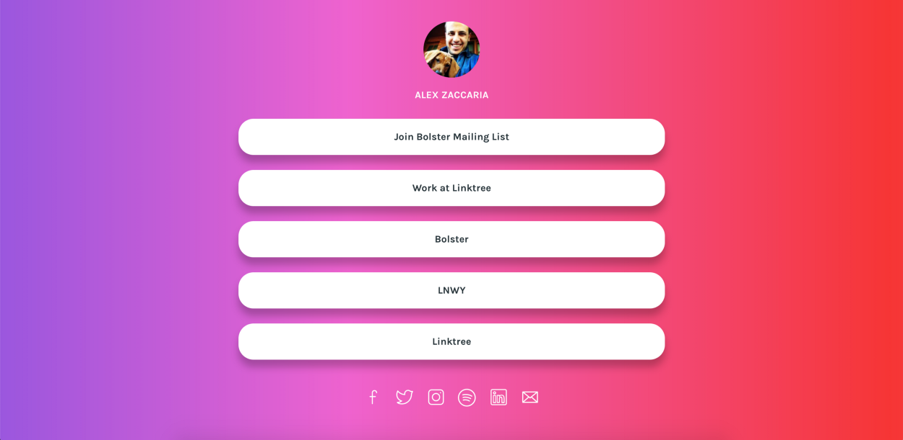
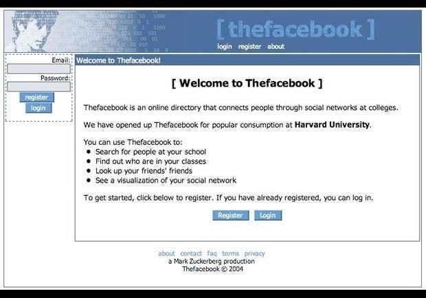

Building a startup is very difficult and often even the smartest people I know, fail miserably at it.
Startups are hard because there are no well defined rules for it. No one can do it for you and even if you succeed at some level, you still may wonder what would've happened if you did something different or worked on a different idea.
Most founders appear in situations where they need to decide if they should continue pushing the same product to their customers or simply step back and change the core funcionality of a product or even start working on a new one in order to grow faster in the future.
Another interesting thing is that even if most of us understand that everything starts from an idea and there is a huge amount of information available about building a company in later stages, it still feels that the process of coming up with great ideas is highly underexplored and it leads many founders to less larger despite how much effort they put.
With that in mind I decided to take a small step towards analyzing how successful startup ideas looked like in the past, that allowed founders to grow their customer base to thousands or even millions of users organically.
Linktr'ee
Linktree is a mini website builder that allows you to create a website with multiple link buttons inside of it.
The problem they solve is that Instagram only allows to share one link on a profile at the time. So Linktree built a mini website builder in order to solve this problem.
They came up with an idea when founders were managing a few Instagram accounts for bands and festivals and were getting sick of having to change the link in the bio often. So they asked their developer to build a really simple landing page that allowed them to load multiple links onto and have the ability to track and manage those links from an app.
It took them only six hours to make a basic version.
Later on, it took them to share it around a few friends in the music industry and it got picked up organically, at first they’d wake up to two new users, then 20 and so on...
Then about a week later it was uploaded onto Product Hunt by someone else and more than 3k people signed up overnight.
In 3 years it grew to 3 million users all organically.
Paypal
As you probably know, PayPal provides an easy and quick way to send and request money online. With Paypal, you can transfer money (abroad) to family, friends, online shops, and auction sites like eBay.
Of course Paypal is not the perfect example here, as it took them a lot of time and resources to build a payment platform, but it’s initial growth is a great example here.
At first Paypal’s first product let people beam money to each other via PalmPilots. However, the world’s millions of PalmPilot users weren’t concentrated in a particular place, they had little in common, and they used their devices only episodically.
As a result, they decided to apply their product to sellers who used to run auctions on eBay platform. In late 1999, eBay had a few thousand high-volume “PowerSellers” and after only three months they were serving 25% of them.
What do these examples have in common?
The simple answer is - they built a product that was dedicated to a market concentrated in one area and it was built in such a way that using this product made it more visible to everyone in that area.
Paypal’s initial users where concentrated on eBay platform and Linktree’s - Instagram
The only thing they needed to do initially is to make a few famous users start using their product and all others followed them. Many users came organically because it was too easy to notice how their peers and competitors used a product. As a result, the rate of trust was much higher because they wanted to use it the same way as their peers.
This effect allowed to avoid costs of building trust with every new user that made it easier to grow fast organically.
High defensibility
Another great feature of such type of products is that high growth and visibility concentrated in one area makes it easier to build defensible products against competitors.
Here are 2 main reasons why such products have high defensibility:
Critical mass - once a product reaches a critical number of users in a particular concentrated area, it becomes nearly impossible for competitors to enter it with similar products. Once a critical number of ebay sellers started using Paypal, the payments through it became a standard on Ebay platform. The platform was full of "Payments accepted only through Paypal" messages.
Unit economics - with a help of organic growth it is possible to ignore unit economics in the beginning. As a result, it was not vital for a Linktree to be profitable in the beginning as long as they were growing organically. Organic growth made them more safe against their competitors, because the only reason they succeeded was not because of paid growth, but because all users were acquired for free. This way they could avoid competitors with the main focus on paid growth.
Concentrated in physical area
Another great way to get organic growth is to build a product only for a market concentrated in a physical area.
Let's take a look at Facebook's famous example.
Facebook was launched by a 19-year old Harvard student Mark Zuckerberg, along with some of his classmates in his dormitory on February 4, 2004.
It took them approximately one month to launch the first version. As today's Facebook is full of features, the first version was very basic. Facebook did not start as a world class product, it started with just Harvard students as Mark Zuckerberg's first version was designed to get all his classmates signed up.
As the site was initially restricted to students of Harvard College, within the first month, half of Harvard's students were members of Facebook. (Approximately 10 thousand users).
Within the next couple months, it expanded to several other universities one by one.
Focus only on one university at the time made it easier for Facebook to reach critical number of users in one area that gave Facebook a lot of crucial advantages in growth.
And the final answer..
So if you want to build a product that may grow organically to thousands of users, you need to solve a problem for users, who have the same particular interests (1) and are concentrated in the same virtual or physical area.
Here are some more examples of concentrated areas:
Virtual - online communities, forums, Subreddits, Facebook groups...
Physical - universities, specific schools (e.g. school of arts), cults, social groups and organizations, events...
If you have more ideas about it or questions, feel free to send me a message.
Post scriptum:
(1) Particular interest of Facebook users was that they want to connect with each other.
Linktree users - they want to share their own websites, other websites and affiliate links on Instagram page.
Paypal users - they want to get paid faster once they sell something on eBay. Before Paypal they used to send money by mail.
References
https://www.weforum.org/agenda/2019/02/how-facebook-grew-from-0-to-2-3-billion-users-in-15-years
https://eu.cincinnati.com/story/news/2020/02/04/today-history-february-4-2004-mark-zuckerberg-launched-early-version-facebook/4633291002/
https://en.wikipedia.org/wiki/Facebook
https://www.nfx.com/post/future-digital-advertising-unsplash/ https://entrepreneurshandbook.co/how-we-grew-linktree-to-3-million-users-in-3-years-a72fbf5700b5